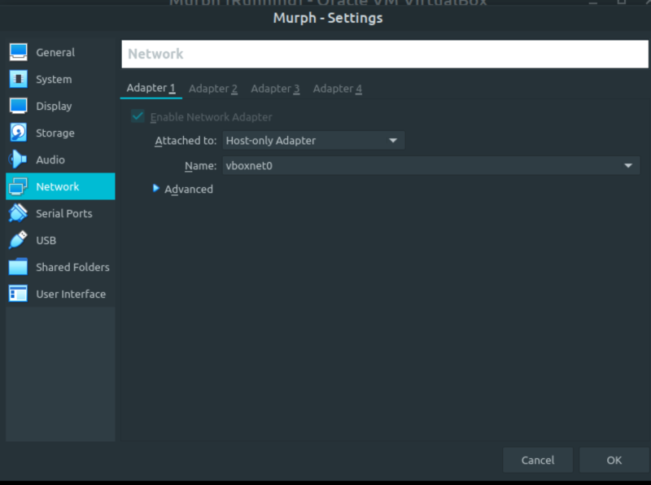
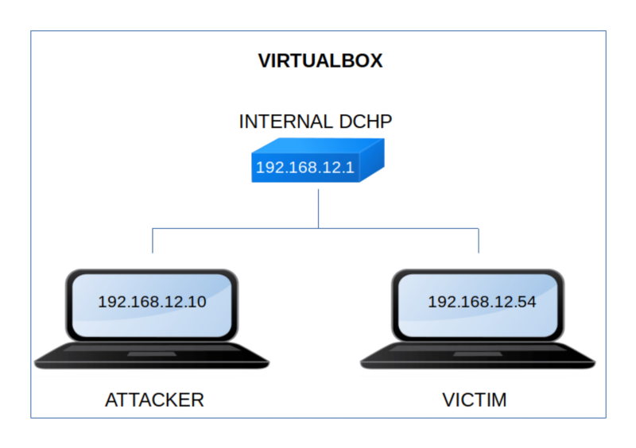

Murph
▸ Murph
▸ 1. Scan Network
▸ 2. Finding Services and Ports
▸ 3. Enumerate
▸ 4. Exploiting
▸ 4.1 Create Web Shell
▸ 4.2 Look for SUID files
▸ 4.3 Signal kill
▸ 4.4 Getting the first flag
▸ 5. Privilege Escalation
▸ 5.1 Stabilize the Reverse Shell
▸ 5.2 See "sudoers" (Second flag)
Difficulty: Medium.
Flag: 2 flags.
Learning:
• Reconnaissance
Scan Network
Find services
• Enumerate
Swap out “php” to “wtf”
• Exploitation
Create a Web Shell
Stabilize the Shell
Look for SUID files
Put processes in background and foreground
Look for processes
Kill a process
• Privilege Escalation
Login as “root”
• Download (Mirror): https://downloads.hackmyvm.eu/murph.zip
Install the machine on VirtualBox:
1. Download the file and extract it.
2. On Virtualbox choose File->Import Appliance.
3. Select the file “ova”.
4. Accept to import.


Watch your Machine IP.
$ ifconfig
Output:

Diagram
